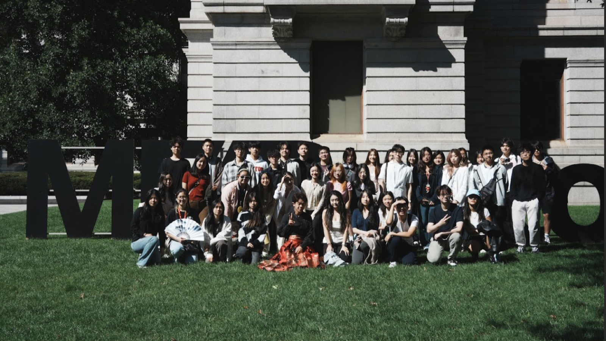
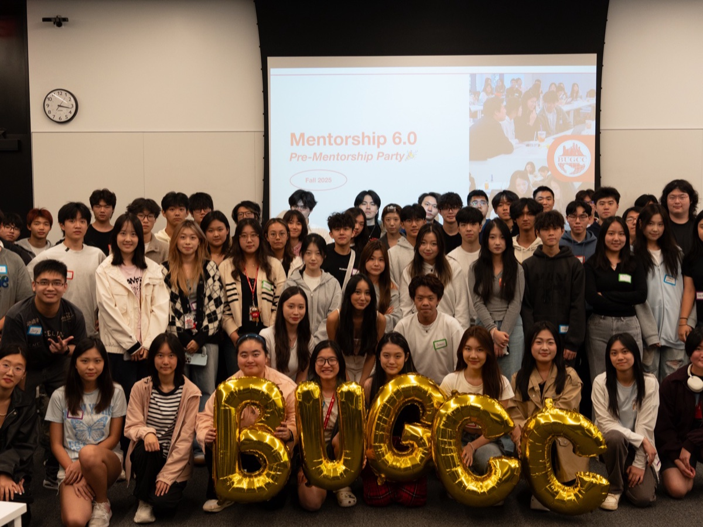
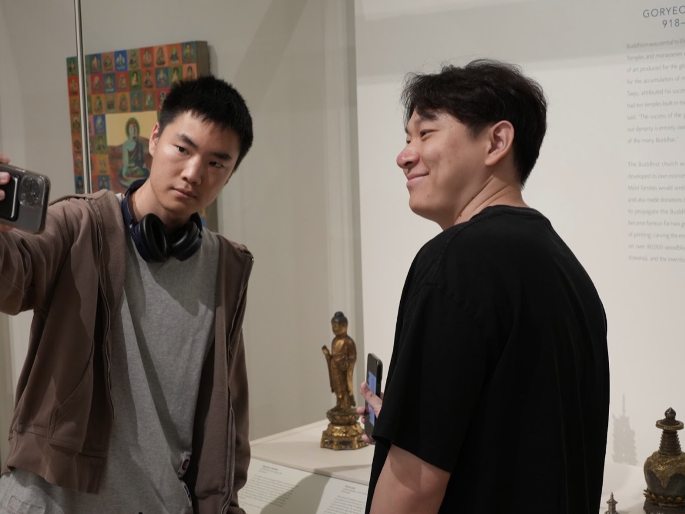
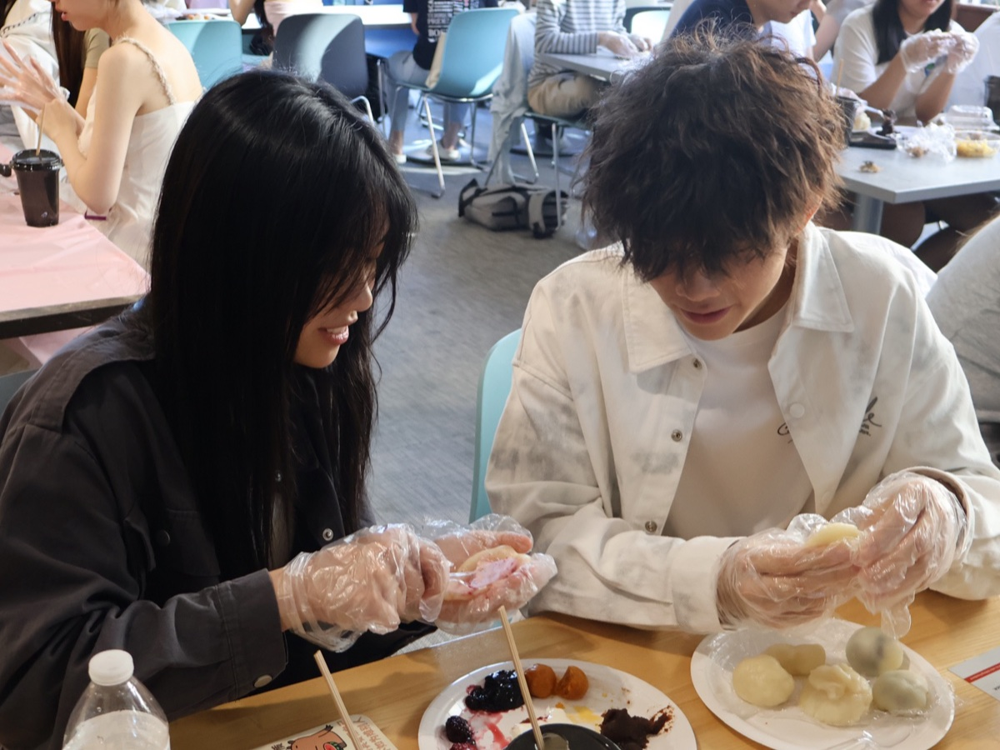
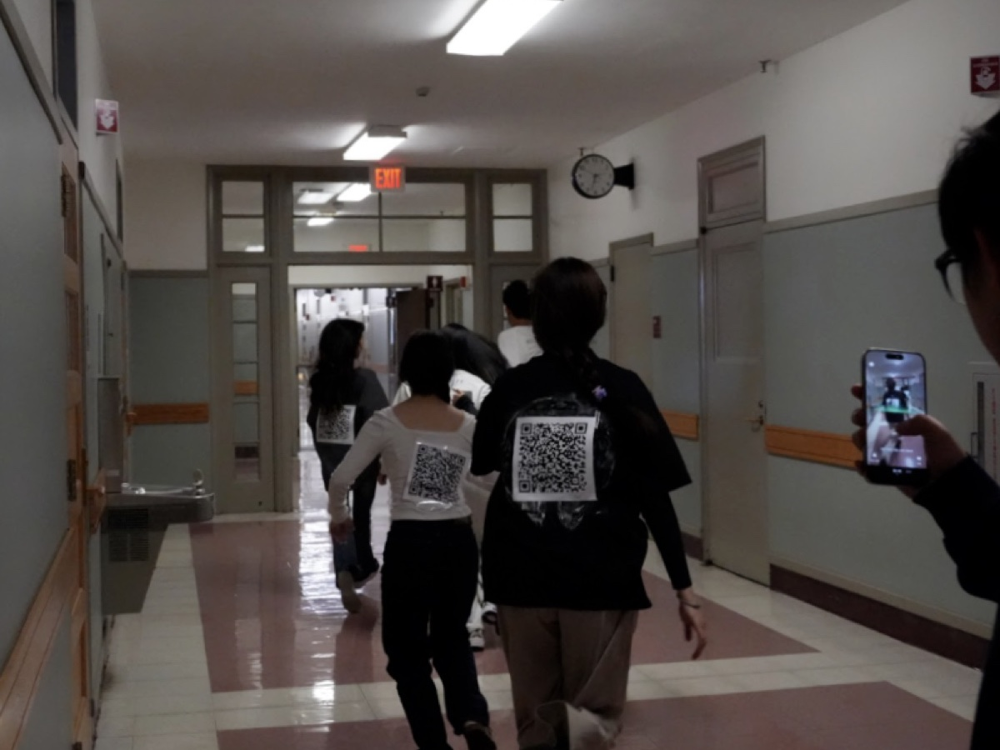
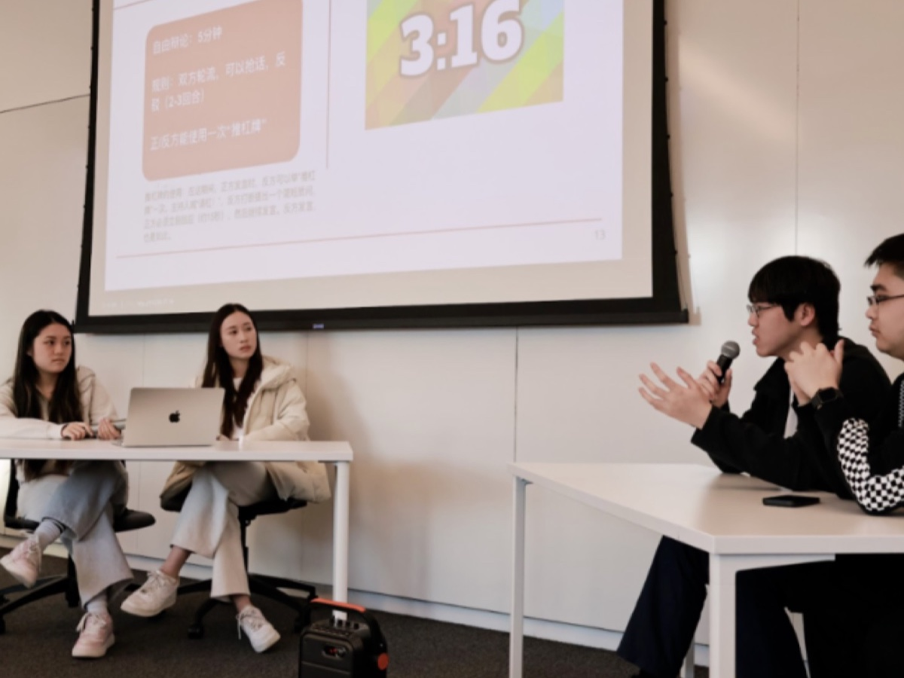

ABOUT · 关于 Mentorship
BUGCC Mentorship Program 是 BUGCC 的长期项目，旨在通过学长学姐（Mentor）与学弟学妹（Mentee）的结对，提供学习、职业和生活上的指导与支持。

RECAP · Mentorship 6.0
从 Pre-Mentorship 的初次相见，到 月饼制作 的甜蜜合作，再到“生存游戏”的团队博弈，最后收官于逻辑与思辨交锋的辩论大赛。
Mentorship 6.0 伴随着 mentor 与 mentee 们一路成长，四场风格迷异却同样精彩的活动——不只是活动本身，更是一段段真实的连接、一次次突破舒适圈的尝试。
第一次见面，故事开始
Pre-Mentorship
Mentor 与 mentee 首次面对面交流。轻松的自我介绍、破冰问答、配对互动，让大家快速熟悉彼此的背景与兴趣点。
很多 mentee 第一次感受到「有人愿意带我往前走」的踏实感。

在艺术馆里一起探索
MFA 寻宝大赛
Mentor 与 mentee 分组进入波士顿美术馆，根据线索寻找展品、完成挑战。每个线索都让大家停下来观察细节、交流想法。
比起竞速，更多是“一起在博物馆里迷路、一起找到答案”的氛围。

一起动手，也一起走近
中秋节·月饼制作
正式开工前，先完成三个趣味小游戏：灯谜夺宝、投壶小将、叠词挑战，闯关获得馅料。随后分工合作，从和面、填馅到压模。
简单的月饼，在欢笑中变成了团队默契的象征。

扫 QR 的全场飙分大战
生存游戏·扫码遇见你
随机分为攻守双方，通过扫 QR、做任务、避开“攻击”来累计积分。每 10 分钟阵营交换，每一个任务点都伴着奔跑与尖叫。
胜负固然刺激，但更珍贵的是“我们是一队”的热情。

用思辨收官，让思想碰撞更有力量
Closing·辩论大赛
抽签决定对阵与正反方，三组六位同学围绕不同主题展开交锋。从开篇立论到总结陈词，台上逻辑缜密、台下认真聆听。
一场很“BUGCC”的收官方式：理性 + 激情，成长 + 挑战。

这一季，我们收获了
跨年级、跨专业的真实连接·Mentor 的耐心引导与经验分享·Mentee 从拘谨到自信的变化·四场活动带来的团队默契·一次又一次“原来我可以做到”的突破。
感谢每一位 mentor 的投入，也感谢所有 mentee 的参与与信任。期待下一次，再和你一起创造更多闪光瞬间。